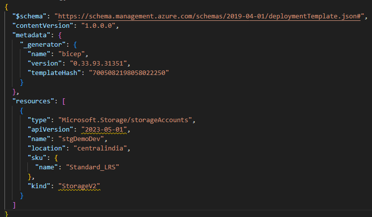
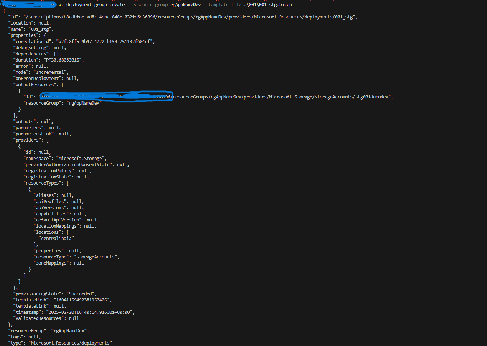
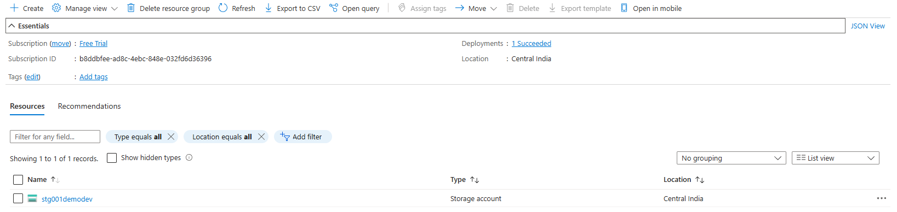
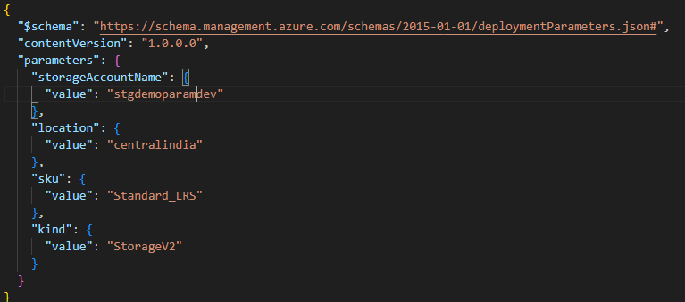

Introduction to Infrastructure as Code (IaC)#
Infrastructure as Code (IaC) is the practice of managing and provisioning infrastructure through machine-readable configuration files, rather than through manual processes. It enables automation, consistency, and scalability in infrastructure management.
Why IaC?#
Traditional infrastructure provisioning involves manually configuring servers, networks, and storage, which is time-consuming, error-prone, and difficult to scale. IaC solves these challenges by treating infrastructure as software code.
Key Benefits of IaC:#
- Automation – Eliminates manual intervention, reducing human errors.
- Consistency – Ensures infrastructure is configured the same way across environments.
- Scalability – Easily replicate and scale infrastructure as needed.
- Version Control – Tracks changes, enabling rollback and auditing.
- Cost Efficiency – Reduces operational overhead by automating infrastructure management.
Types of IaC Approaches:#
- Declarative (What to achieve) – Defines the desired state of the infrastructure, and the tool ensures it matches. Examples: Terraform, Azure Bicep.
- Imperative (How to achieve it) – Defines step-by-step instructions to configure infrastructure. Examples: Ansible, scripts (Bash, PowerShell).
Popular IaC Tools:#
- Terraform – Open-source, cloud-agnostic IaC tool for provisioning and managing infrastructure.
- Azure Bicep – A domain-specific language (DSL) for deploying resources in Azure.
- AWS CloudFormation – Manages AWS infrastructure using JSON/YAML templates.
Introduction to Azure Bicep#
Azure Bicep is a domain-specific language (DSL) developed by Microsoft for deploying Azure resources declaratively. It is designed as an alternative to JSON-based ARM templates, providing a more readable and maintainable syntax.
Why Use Azure Bicep?#
- Simplified Syntax – More concise and readable than ARM templates.
- Improved Modularity – Supports reusable modules for better maintainability.
- Better Tooling – Integrated with Visual Studio Code and Azure CLI for enhanced developer experience.
- Automatic Conversion – Can decompile existing ARM templates into Bicep code.
- No JSON Complexity – Eliminates the need for complex and verbose JSON structures.
Key Features of Azure Bicep#
- Declarative and Idempotent – Defines infrastructure as code, ensuring consistent deployments.
- Reusable Modules – Supports modular development for large-scale environments.
- Native Azure Integration – Works seamlessly with Azure Resource Manager (ARM) and Azure DevOps.
- Simplified Parameterization – Enables flexible and reusable configurations.
Azure Bicep vs. ARM Templates#
| Feature | Azure Bicep | ARM Templates |
|---|---|---|
| Syntax | Simple, readable | Complex JSON |
| Modularity | Supports reusable modules | No native modularity |
| Tooling | VS Code, Azure CLI | Native Azure support |
| Conversion | Can decompile ARM to Bicep | No direct conversion to Bicep |
Which One to Choose?#
- Use Azure Bicep if you want a simplified, modular, and maintainable approach to Azure resource deployment.
- Use ARM Templates if you need JSON-based definitions for legacy or existing automation processes.
1. Install Azure CLI#
Azure CLI is required to deploy Bicep files.
Link : https://learn.microsoft.com/en-us/cli/azure/install-azure-cli#install#
Common Structure of an Azure Bicep File#
Over this example, for creating an Azure Storage Account using bicep
Bicep deployment#
You can view the JSON template you submitted to Resource Manager by using the bicep build command. In the next example, a Bicep template is converted into its corresponding JSON template
Convert Bicep to JSON#
Run the following command:
az bicep build --file .\001\001_stg.bicep

Preview Before Deployment#
The bicep what-if command is used to preview the changes that will be made to an Azure resource group before deploying a Bicep file. It provides a detailed summary of which resources will be created, modified, or deleted without actually making any changes.
az deployment group create --resource-group rgAppNameDev --template-file .\001\001_stg.bicep --what-if
Deploy First Bicep Templaye#
Using Az Cli#
az deployment group create --resource-group rgAppNameDev --template-file .\001\001_stg.bicep
Post Deployment:  
Bicep Parameter#
Bicep parameters (param) allow you to pass values into a Bicep template, making it more reusable and configurable. Parameters help define inputs such as resource names, locations, or sizes, which can be provided at deployment time.
Defining Bicep Parameter with Annotations#
@description('The unique name for the storage account.')
@minLength(3)
@maxLength(24)
param storageAccountName string
@description('The Azure region where the storage account will be deployed.')
@allowed(['eastus', 'westus', 'centralindia'])
param location string
@description('The SKU of the storage account.')
@allowed(['Standard_LRS', 'Standard_GRS', 'Premium_LRS'])
param sku string
@description('The kind of storage account.')
@allowed(['StorageV2', 'BlobStorage', 'FileStorage'])
param kind string
Bicep Parameter Decorators#
| Decorator | Description |
|---|---|
@description('...') |
Adds a description for documentation purposes. |
@allowed([...]) |
Restricts the parameter to specific values. |
@minLength(n) |
Ensures a minimum length for a string or array parameter. |
@maxLength(n) |
Ensures a maximum length for a string or array parameter. |
@minValue(n) |
Sets a minimum value for an integer parameter. |
@maxValue(n) |
Sets a maximum value for an integer parameter. |
@secure() |
Marks a parameter as sensitive, ensuring its value isn't logged or stored in deployment history. |
Parameters Files#
Here’s a generated parameter file (parameters.json) for your Bicep deployment

Deploy Infra with Parameter file#
az deployment group create --resource-group rgAppNameDev --template-file 001/001_stg_param.bicep --parameters "001/001_stg_param.parameters.json"
Output in Bicep#
In Bicep, the output keyword is used to return values from a deployment. These values can be used by other scripts, referenced in deployment pipelines, or checked after deployment.
Basic Syntax#
output <outputName> <dataType> = <value>
Checkout the code for#
see bicepfile here
Bicep modules#
Bicep modules are reusable Bicep files that help organize, reuse, and simplify infrastructure-as-code (IaC) deployments. They allow you to break down complex deployments into smaller, manageable components.
Using Bicep Modules#
Why Use Bicep Modules?#
✅ Code Reusability – Define once, use multiple times.
✅ Better Organization – Break large templates into smaller files.
✅ Improved Maintainability – Modify modules independently.
✅ Encapsulation – Hide implementation details while exposing required parameters.
Example: Using Bicep Modules#
1. Define a Bicep Module#
Create a Bicep module file (storage.bicep) that defines a storage account:
param storageAccountName string
param location string = resourceGroup().location
param sku string = 'Standard_LRS'
resource storage 'Microsoft.Storage/storageAccounts@2023-01-01' = {
name: storageAccountName
location: location
kind: 'StorageV2'
sku: {
name: sku
}
}
output storageId string = storage.id
2. Use the Module in a Main Bicep File#
Reference the module in your main Bicep file (main.bicep):
param storageAccountName string
param location string = resourceGroup().location
module storageModule './storage.bicep' = {
name: 'storageDeployment'
params: {
storageAccountName: storageAccountName
location: location
}
}
3. Deploy Using Azure CLI#
Run the following command to deploy the Bicep template:
az deployment group create --resource-group <ResourceGroupName> --template-file main.bicep --parameters storageAccountName=<YourStorageAccount>
Benefits of Using Modules#
- Simplifies complex deployments by breaking them into smaller, manageable components.
- Enhances collaboration by allowing teams to work on separate modules.
- Easier troubleshooting since each module can be tested independently.
- Improves security by exposing only necessary parameters while keeping implementation details hidden.
By structuring your Bicep templates into reusable modules, you enhance scalability, maintainability, and clarity in your infrastructure as code (IaC) deployments. 🚀